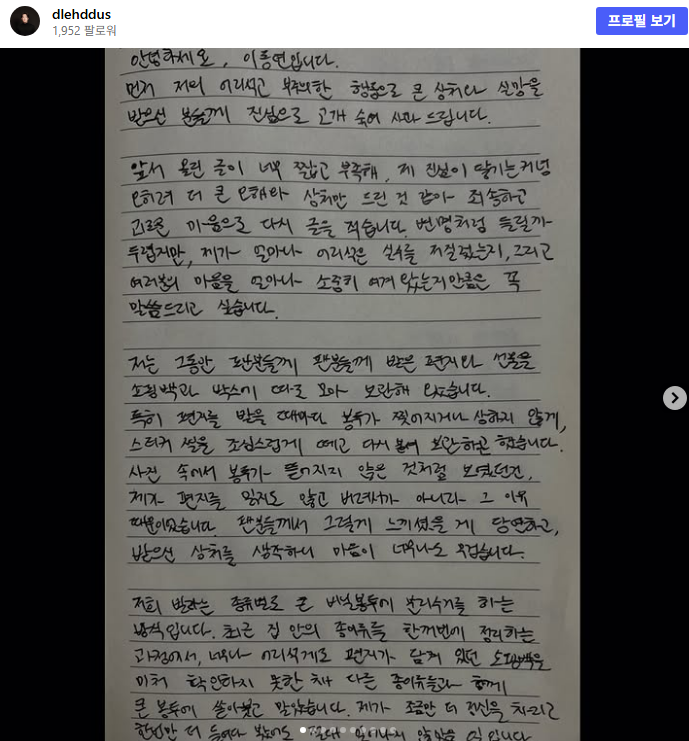
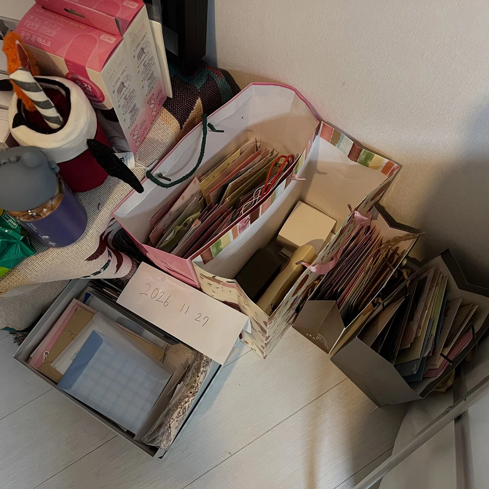
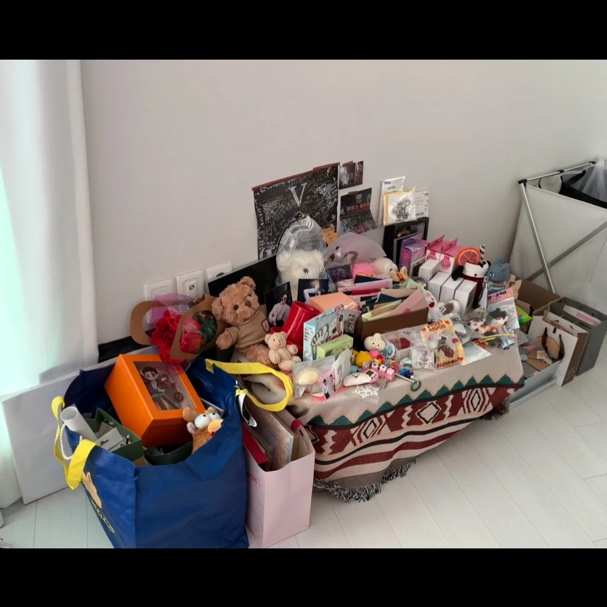
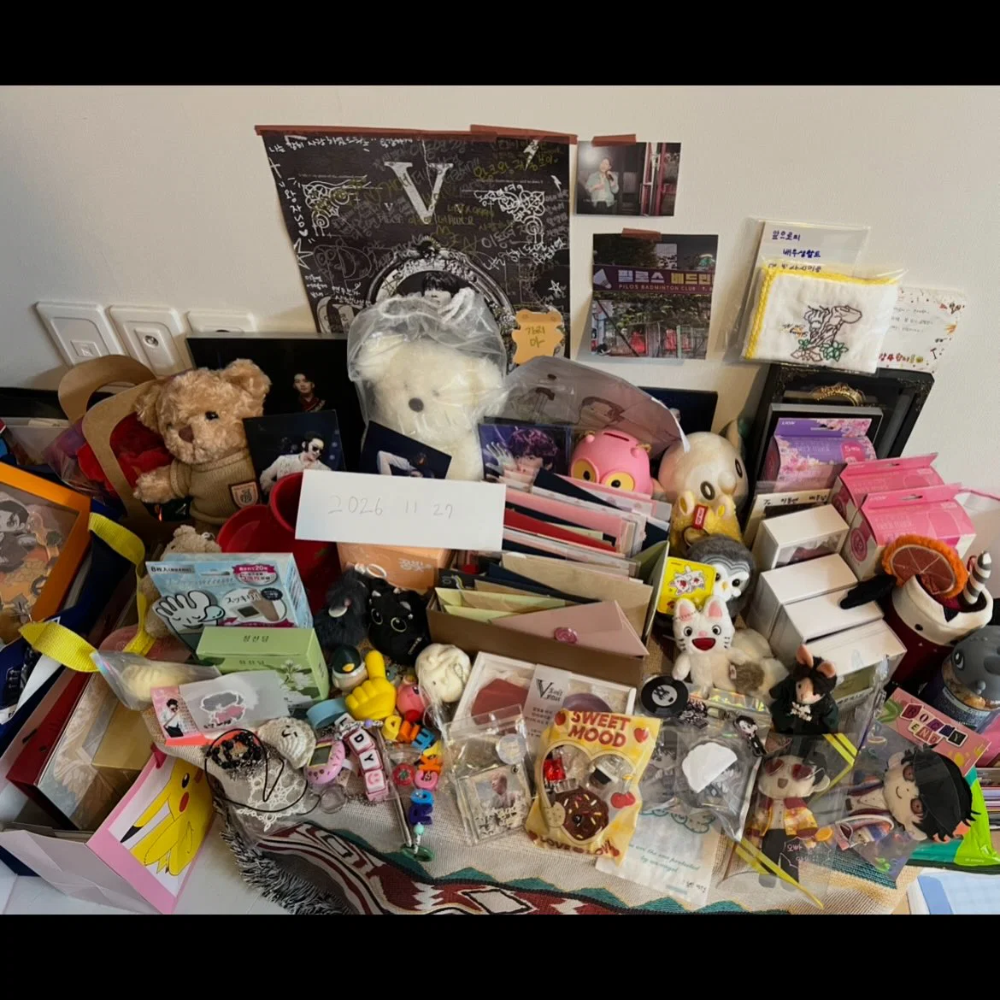
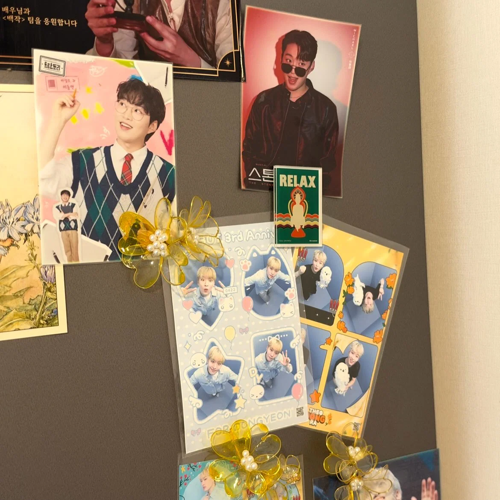
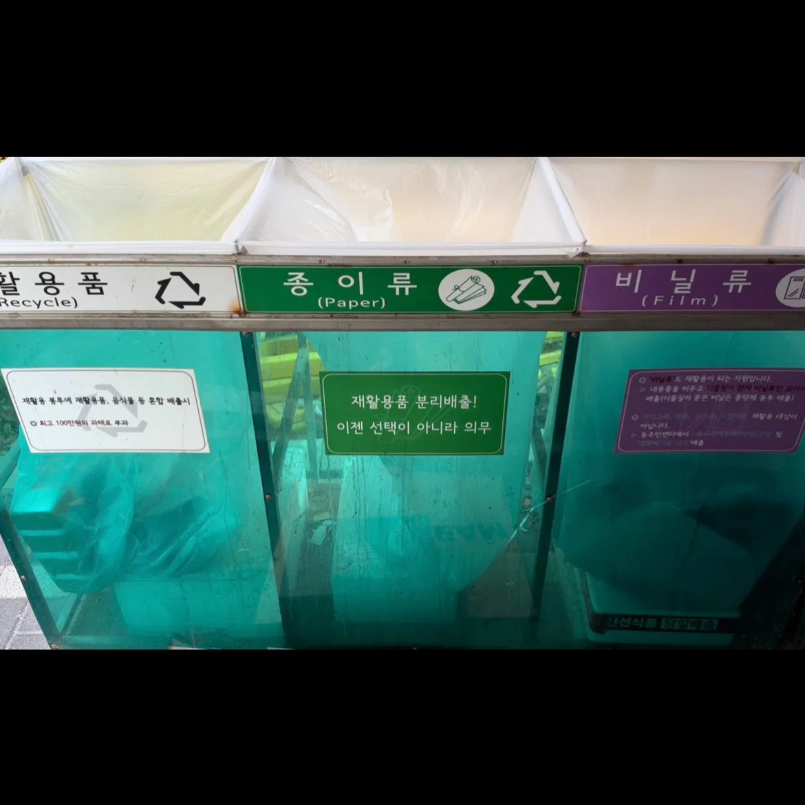

안녕하세요, 이동연입니다.
먼저 저의 어리석고 부주의한 행동으로 큰 상처와 실망을 받으신 분들께 진심으로 고개 숙여 사과드립니다.
앞서 올린 글이 너무 짧고 부족해, 제 진심이 닿기는커녕 오히려 더 큰 오해와 상처만 드린 것 같아 죄송하고 괴로운 마음으로 다시 글을 적습니다. 변명처럼 들릴까 두렵지만, 제가 얼마나 어리석은 실수를 저질렀는지, 그리고 여러분의 마음을 얼마나 소중히 여겨왔는지만큼은 꼭 말씀드리고 싶습니다.
저는 그동안 팬분들께 받은 편지와 선물을 보관용 쇼핑백과 박스에 따로 모아 보관해 왔습니다. 특히 편지를 받을 때마다 봉투가 찢어지거나 상하지 않게, 스티커 씰을 조심스럽게 떼고 다시 붙여 보관하곤 했습니다. 사진 속에서 봉투가 뜯어지지 않은 것처럼 보였던 건, 제가 편지를 읽지도 않고 버려서가 아니라 그 이유 때문이었습니다. 팬분들께서 그렇게 느끼셨을 게 당연하고, 받으신 상처를 생각을 하니 마음이 너무나도 무겁습니다.
저희 빌라는 종류별로 큰 비닐봉투에 분리수거를 하는 방식입니다. 최근 집 안의 종이류를 한꺼번에 정리하는 과정에서, 너무나 어리석게도 편지가 담겨 있던 쇼핑백을 미처 확인하지 못한 채 다른 종이류들과 함께 큰 봉투에 쏟아붓고 말았습니다. 제가 조금만 더 정신을 차리고 한 번만 더 들여다봤어도 절대 일어나지 않았을 일입니다. 그저 제 불찰이고, 제 손으로 소중한 마음을 지켜내지 못한 제 잘못입니다.
온라인에 올라온 사진은 아마도 분리수거 봉투 속에 섞여 들어간 편지들을 누군가 다시 꺼내어 펼쳐놓고 촬영한 것으로 보입니다. 누군가를 탓할 생각은 추호도 없습니다. 애초에 제가 그 봉투에 편지를 쏟아 넣지만 않았어도, 여러분의 진심이 그런 차가운 바닥에 놓이는 일은 결코 없었을 테니까요.
어떤 말로도 이미 갈기갈기 찢어진 팬분들의 마음을 되돌릴 수 없다는 걸 잘 압니다. 저 같은 사람이 무엇이라고 이렇게까지 과분한 사랑을 주셨는데, 그 귀한 마음을 끝까지 지켜내지 못한 제 자신이 너무나 한심하고 부끄럽습니다.
저는 정말, 단 한 순간도 팬분들이 보내주신 편지와 선물, 그 안에 담긴 진심을 가볍게 여긴 적이 없습니다. 지금도 그렇고, 앞으로 제 인생이 어떻게 되든 그 감사함만큼은 평생 잊지 못할 것입니다.
저로 인해 마음 다치시고 실망하신 모든 분께 다시 한번 진심으로 죄송합니다. 정말 죄송합니다.
이동연 올림





3줄 요약
1. 팬이 주는 편지들은 평소에 다 읽고 보관해왔다
2. 다 읽은 편지는 봉투가 상하지 않도록 스티커 씰을 다시 붙여서 보관해왔다. 그래서 안 읽은 것처럼 보이는 거다
3. 최근 집안의 종이류를 한꺼번에 버리는 과정에서, 쇼핑백 안에 들어가있던 편지들도 다른 종이들과 함께 실수로 버려진 거다

그래그래 잘하자